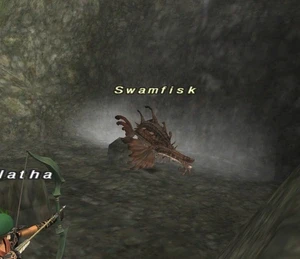
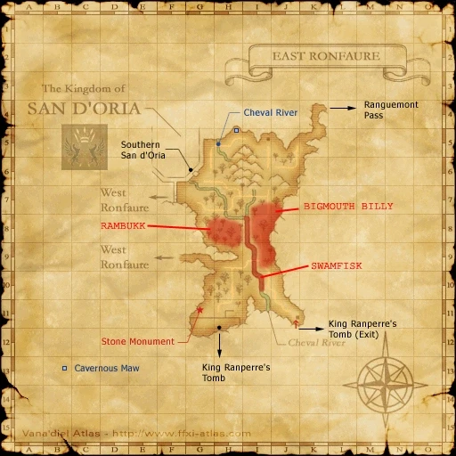

Level 75 reference · Zenith rules
|
Job: Warrior Notorious Monster |
 |

|
Zone |
Level |
Drops |
Steal |
Spawns |
Notes |
|
11 - 15 |
1 |
A, L | |||
|
HP = Detects Low HP; M = Detects Magic; Sc = Follows by Scent; T(S) = True-sight; T(H) = True-hearing JA = Detects job abilities; WS = Detects weaponskills; Z(D) = Asleep in Daytime; Z(N) = Asleep at Nighttime | |||||


Image source
Notes:
- Lottery-based Pugil spawn.
- Spawns in the river in the I-8 to I-10 area.
- Has 2 Spawn Points one in (I-10) under the Log across the river.
- On Widescan the (I-10) Swamfisk Spawn Place Holders are the 4 Pugils between 3 Goblin Fishers and 4 Forest Hares.
- The Other spawn near (I-8) on Widescan, the Place Holders are next set of Pugils found after the 3 Forest Funguars, 2 Scarab Beetles, and 3 Wild Sheep in a row.
Adapted from Eden Wiki: Swamfisk · Contributors and history · CC BY-SA 4.0. Revision 44749. Layout, links and optional background text adapted for Zenith.